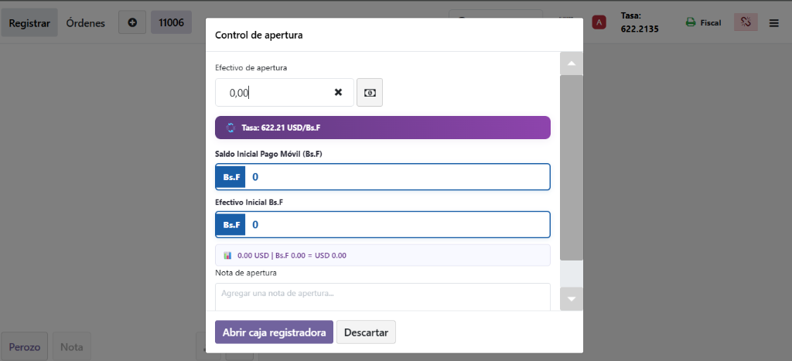
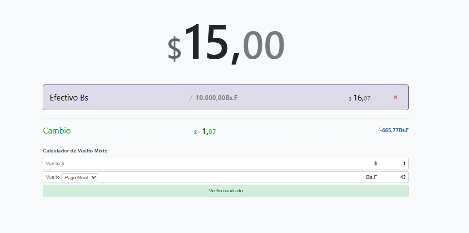
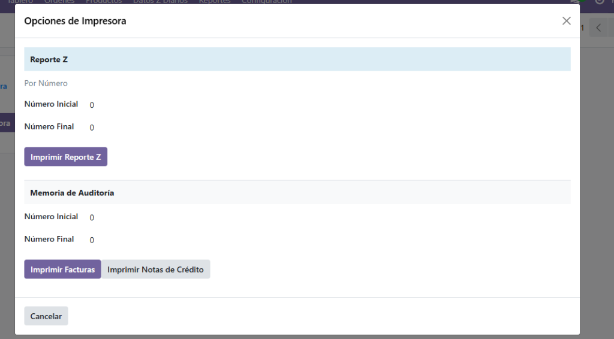
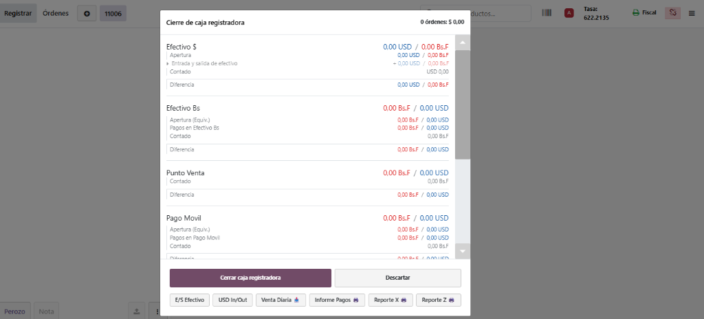
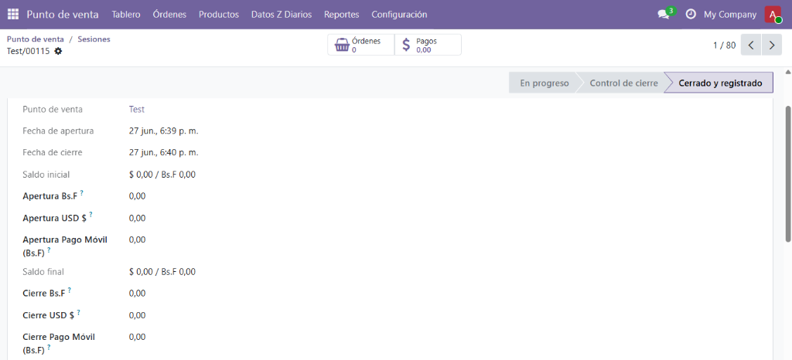
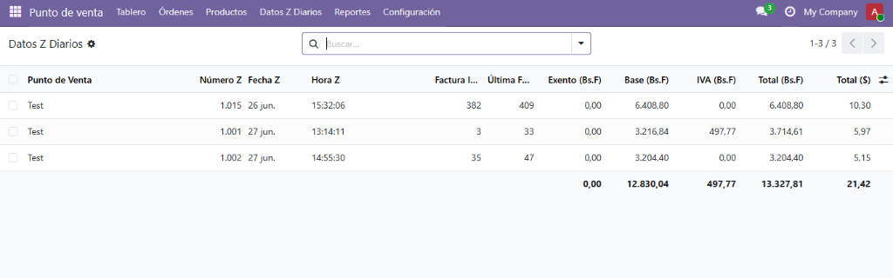
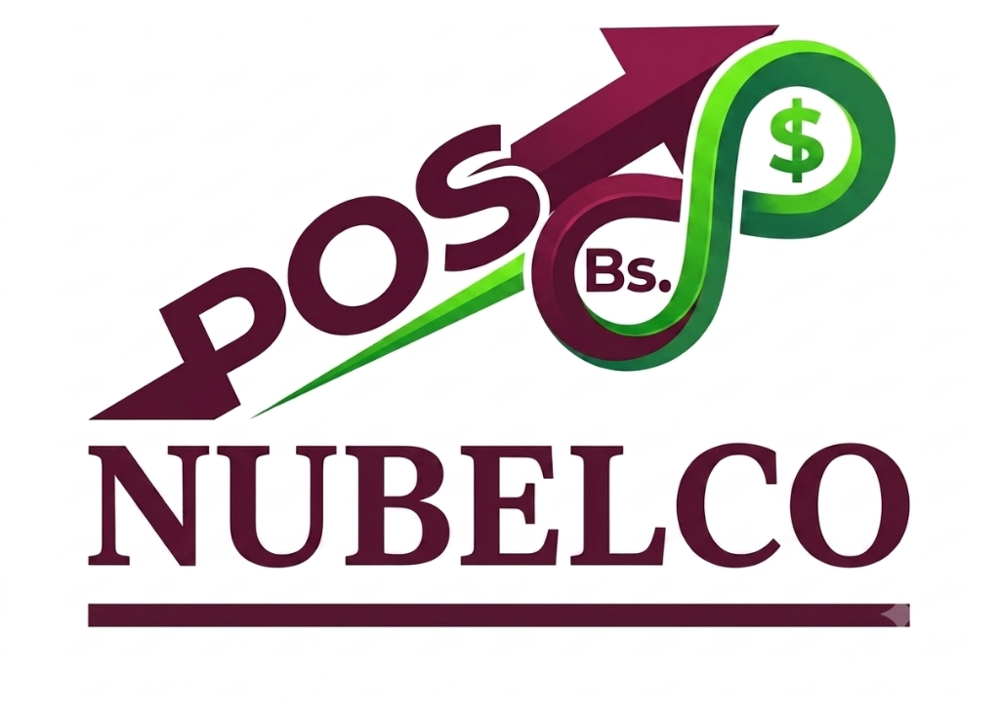

Desde que el cajero abre su turno hasta que el contador revisa los reportes Z.
El día comienza con claridad. El cajero ingresa su base (fondo de caja) separando exactamente cuántos billetes tiene en Dólares Físicos, Efectivo Bs y Pago Móvil. El sistema le muestra la equivalencia según la tasa oficial (BCV) del día en tiempo real.

¿El cliente paga $15, pero el cobro total era diferente? Nuestra Calculadora de Vuelto Mixto permite al cajero asentar cuánto vuelto dará en dólares físicos y cuánto en bolívares (Pago Móvil/Efectivo) simultáneamente. Además, el IGTF del 3% se aplica solo al monto en divisas.

Comunicación directa desde el navegador (Web Serial API) con su máquina fiscal HKA, Epson o Bematech. El cajero tiene acceso instantáneo a imprimir Reportes Z, Memoria de Auditoría, Reimpresión de Facturas y Notas de Crédito sin usar software adicional.

Al finalizar el día, el cajero realiza su cuadre de caja declarando de manera independiente: Efectivo $, Efectivo Bs, Punto de Venta y Pago Móvil. Las alertas en tiempo real evitarán fugas de dinero por errores cambiarios o descuadres.

El gerente o contador tiene una vista panorámica de todas las sesiones de POS. Puede auditar con exactitud las aperturas y cierres en cada moneda (Apertura Bs.F, Apertura USD, Cierre Pago Móvil, etc.), asegurando un flujo de caja corporativo impecable.

Todos los cierres Z ejecutados en la máquina fiscal se almacenan y consolidan automáticamente en el backend de Odoo. Obtenga reportes detallados con Número de Factura Inicial/Final, Base Imponible, IVA y Totales (Dual) listos para la declaración de impuestos.

¿Su empresa maneja catálogos masivos? Nuestro Performance Fix garantiza búsquedas de productos instantáneas incluso con inventarios de más de 250,000 ítems sin colapsar el navegador.

La evolución del comercio venezolano.